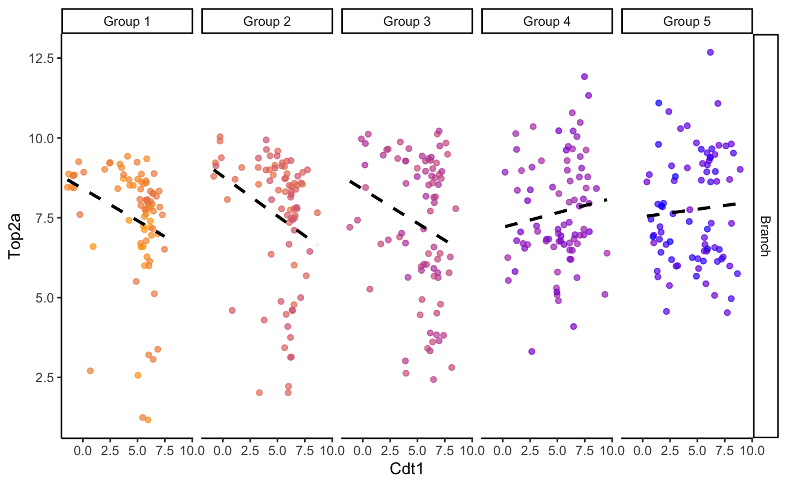
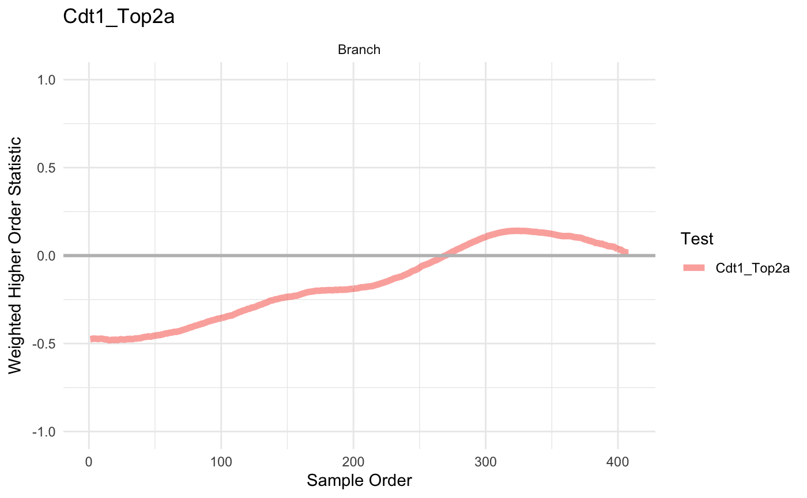

plotHigherOrderSequence.Rdthe plotHigherOrderSequence function plots weighted higher order statistic vectors (stored in higherOrderSequence) as line plots
plotHigherOrderSequence( scHOT, gene, positionType = NULL, branches = NULL, positionColData = NULL )
| scHOT | A scHOT object with higherOrderSequence in scHOT_output slot |
|---|---|
| gene | is either a logical vector matching rows of entries in wcorsList, or a character of a gene |
| positionType | A string indicates the position type, either trajectory or spatial |
| branches | A character indicates that the colnames stored the branch information in colData (for trajectory type of data) |
| positionColData | A vector indicates column names of colData that stored the postion informaton (for spatial type of data) |
ggplot object with line plots
data(liver) scHOT_traj <- scHOT_buildFromMatrix( mat = liver$liver_branch_hep, cellData = list(pseudotime = liver$liver_pseudotime_hep), positionType = "trajectory", positionColData = "pseudotime") scHOT_traj#> class: scHOT #> dim: 568 408 #> metadata(0): #> assays(1): expression #> rownames(568): 2810474O19Rik Abca1 ... Ahsg Epcam #> rowData names(0): #> colnames(408): E10.5D_3_02 E10.5D_2_01 ... E17.5D_1_01 F5A_E16.5 #> colData names(1): pseudotime #> reducedDimNames(0): #> altExpNames(0): #> testingScaffold dim: 0 0 #> weightMatrix dim: 0 0 #> scHOT_output colnames (0): #> param names (0): #> position type: trajectory#> #>#>#> Warning: Use of `gdf_sub$ExpressionGene1` is discouraged. Use `ExpressionGene1` instead.#> Warning: Use of `gdf_sub$ExpressionGene2` is discouraged. Use `ExpressionGene2` instead.#> Warning: Use of `gdf_sub$ExpressionGene1` is discouraged. Use `ExpressionGene1` instead.#> Warning: Use of `gdf_sub$ExpressionGene2` is discouraged. Use `ExpressionGene2` instead.#>scHOT_traj <- scHOT_addTestingScaffold(scHOT_traj, t(as.matrix(c("Cdt1", "Top2a")))) scHOT_traj <- scHOT_setWeightMatrix(scHOT_traj, positionColData = c("pseudotime"), positionType = "trajectory", nrow.out = NULL, span = 0.25)#>#>scHOT_traj <- scHOT_calculateGlobalHigherOrderFunction(scHOT_traj, higherOrderFunction = weightedSpearman, higherOrderFunctionType = "weighted")#>#>#>slot(scHOT_traj, "scHOT_output")#> DataFrame with 1 row and 5 columns #> gene_1 gene_2 globalHigherOrderFunction #> <character> <character> <numeric> #> 1 Cdt1 Top2a -0.107678 #> higherOrderSequence higherOrderStatistic #> <NumericList> <numeric> #> 1 -0.475231,-0.474384,-0.471804,... 0.21339#>#> Warning: Use of `branch_long$SampleOrder` is discouraged. Use `SampleOrder` instead.#> Warning: Use of `branch_long$WeightedCorrelation` is discouraged. Use `WeightedCorrelation` instead.#> Warning: Use of `branch_long$GenePair` is discouraged. Use `GenePair` instead.#> Warning: Use of `branch_long$GenePair` is discouraged. Use `GenePair` instead.